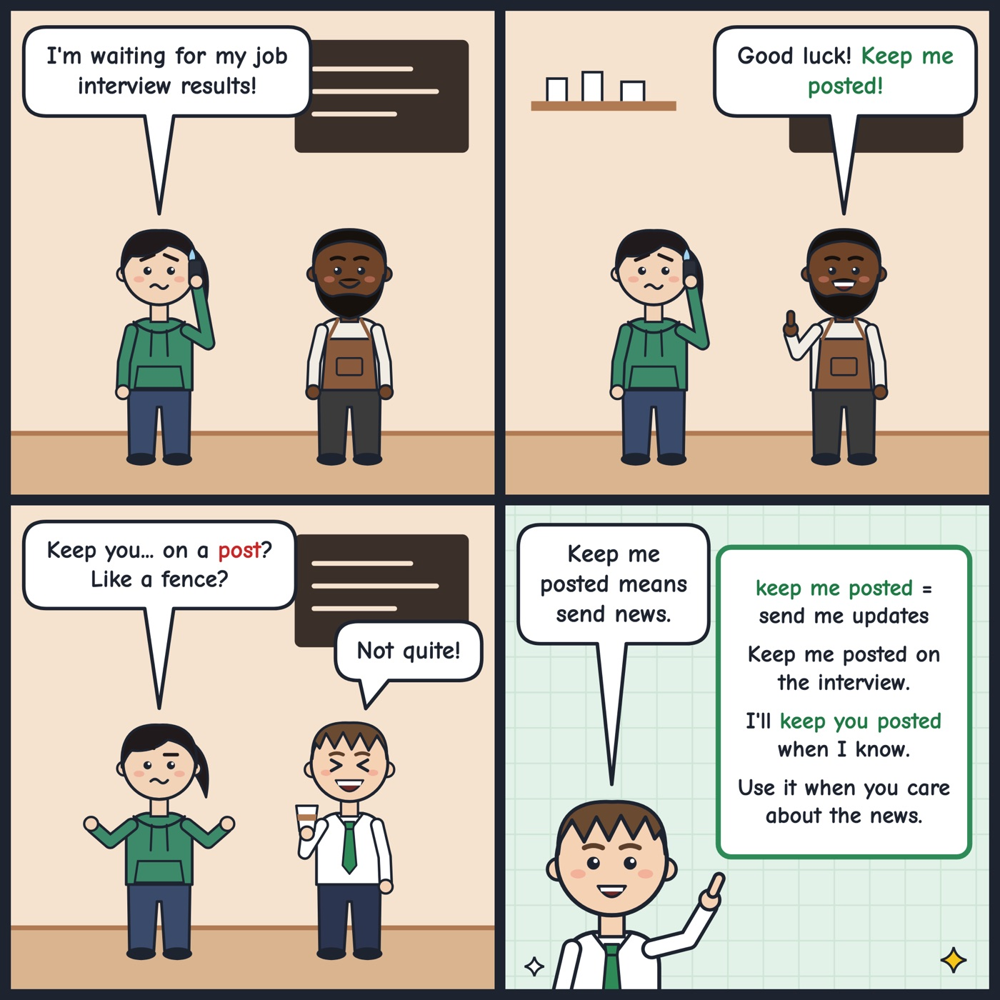

keep (someone) posted
To give someone new information regularly as a situation changes.
Let me know how the interview goes and keep me posted.
'Keep someone posted' means to tell them news as it comes. People say it when they care about an update.

Your turn
Who do you need to keep posted this week?
Who do you need to keep posted this week?